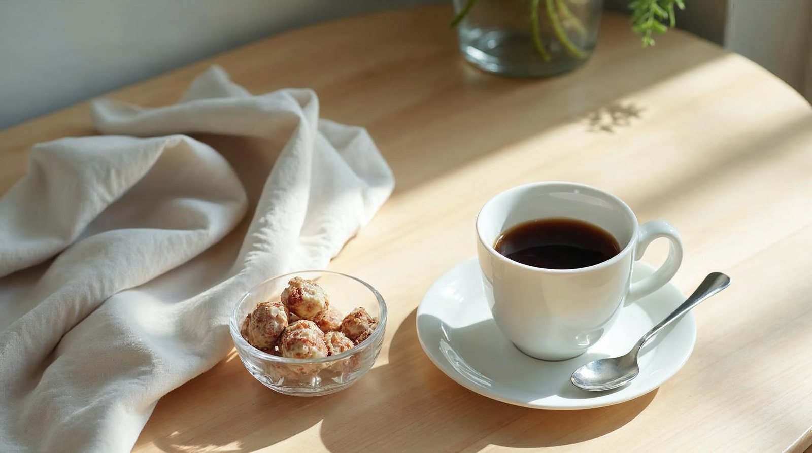
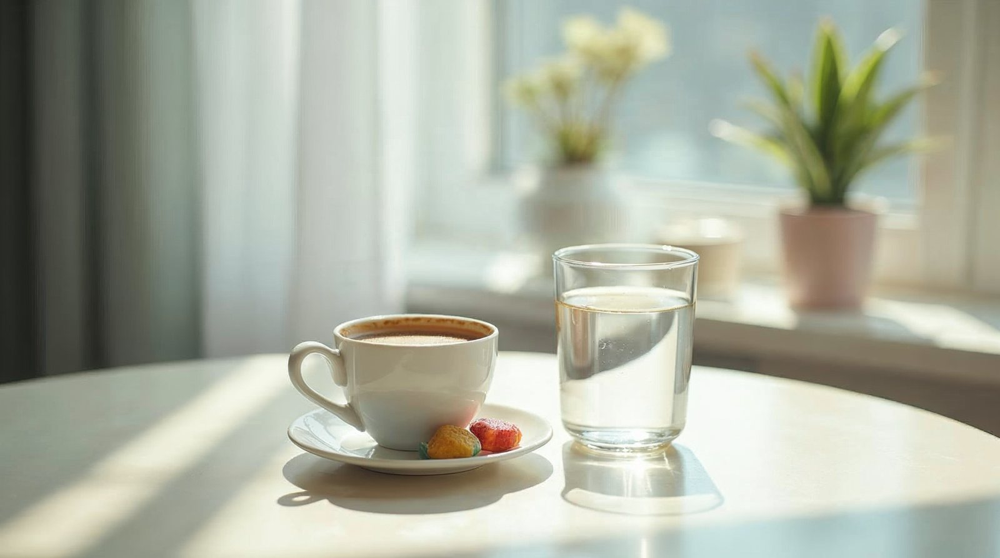
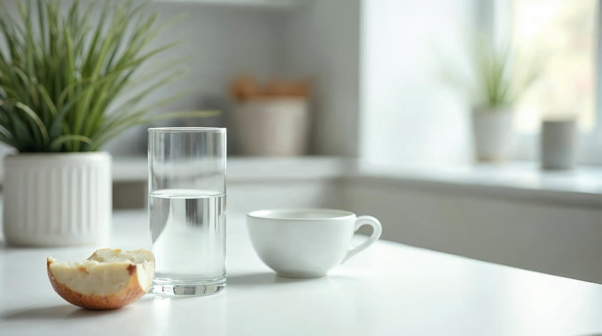
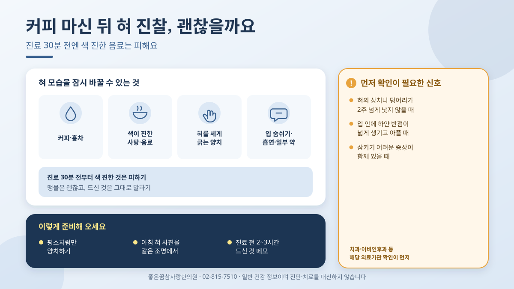

이종호 한의사 감수좋은꿈참사랑한의원 대표원장 (한의사 면허번호 19769)발행 2026-11-23 · 수정 2026-11-26
이 글의 차례
- 왜 혀를 보면 몸 상태를 짐작해 볼 수 있을까요?
- 설진에서는 혀의 무엇을 보나요?
- 왜 이런 불편이 생길 수 있나요
- 진찰 때 혀는 어떻게 내밀면 되나요?
- 어떤 음식과 습관이 혀 모습을 바꿀 수 있나요?
- 먼저 이렇게 여쭙니다
- 혀 하나로 몸 상태를 판단하나요?
- 입 마름이나 쓴맛, 입 냄새가 함께 있다면?
- 다시 볼 때 같은 조건을 맞추는 이유는 무엇인가요?
- 진료 당일 아침은 어떻게 보내면 좋을까요?
- 일상에서 먼저 해 볼 수 있는 것
- 담배를 피우거나 드시는 약이 있다면?
- 상황별 예시
- 스스로 점검해 보세요
- 한의원에서 함께 살필 수 있는 경우
- 아이나 어르신이 설진을 받을 때는 무엇을 챙기면 좋을까요?
- 첫 방문은 이렇게 진행됩니다
- 혀 사진은 어떻게 찍어 두면 좋을까요?
- 이렇게 기록해 오시면 상담이 쉬워집니다
- 얼마나 지켜보고 언제 상담할까요?
- 이런 증상은 먼저 확인이 필요합니다
네, 커피나 사탕, 색이 진한 음료는 혀 색과 설태를 잠시 바꿀 수 있어 설진에 영향을 줄 수 있습니다. 그래서 진료 30분 전부터는 피하시고, 드신 것이 있으면 진찰 때 그대로 말씀해 주시길 권합니다. 진료실에서 혀를 보여 달라고 하면 '아까 커피를 마셨는데 괜찮을까요?'라고 묻는 분이 많습니다.
괜찮습니다. 이미 드셨다고 진찰을 못 하는 것은 아니고, 무엇을 언제 드셨는지만 알려 주시면 그만큼을 감안해서 봅니다. 혀는 몸 상태를 보여 주는 여러 단서 가운데 하나라, 그날의 혀 모습이 조금 달라도 맥과 말씀, 생활 이야기를 함께 놓고 판단합니다.
왜 혀를 보면 몸 상태를 짐작해 볼 수 있을까요?
혀는 몸 안의 근육과 점막이 밖에서 바로 보이는 몇 안 되는 곳입니다. 피의 색이 비치고, 침과 수분 상태가 드러나며, 먹고 소화하는 일과도 가까이 이어져 있습니다. 그래서 한의학에서는 오래전부터 혀의 색과 설태를 몸의 열감과 냉감, 소화, 피로를 짐작하는 단서로 살펴 왔습니다.
다만 혀는 바깥 환경에도 쉽게 반응합니다. 방금 마신 음료, 입으로 숨 쉰 시간, 혀를 닦은 정도가 그대로 묻어나기 때문에, 몸 상태가 드러난 모습과 잠깐 묻은 모습을 가려 보려면 그날 무엇을 드셨는지가 꼭 필요합니다.
설진에서는 혀의 무엇을 보나요?
혀를 보여 달라고 하는 시간은 몇 초에 불과하지만, 그 짧은 동안 여러 가지를 함께 봅니다.
- 혀의 바탕색: 옅은 분홍빛인지, 붉은 기운이 강한지, 핏기가 옅어 보이는지
- 설태: 혀 위에 얇게 덮인 막이 얇은지 두꺼운지, 흰빛인지 누런빛인지, 고르게 덮였는지
- 모양: 혀가 부어 가장자리에 치아 자국이 있는지, 갈라진 줄이 있는지, 끝이 유난히 붉은지
- 촉촉한 정도: 물기가 많은지, 말라 보이는지
이런 모습은 소화, 잠, 몸의 열감이나 냉감, 피로 같은 이야기와 이어서 볼 때 의미가 생깁니다. 그래서 커피 한 잔으로 설태 색이 바뀌면 그 연결이 흐려질 수 있어 미리 말씀드리는 것입니다. 혀 아랫면의 혈관이 굵거나 짙어 보이는지도 필요하면 함께 봅니다.
왜 이런 불편이 생길 수 있나요
- 커피, 홍차, 색이 진한 사탕이나 음료는 혀 표면의 설태에 색을 입혀 평소와 다르게 보이게 할 수 있습니다.
- 양치하며 혀를 세게 긁으면 설태가 얇아져 평소 모습을 보기 어려워집니다.
- 입으로 숨 쉬는 습관, 흡연, 일부 약은 혀의 색과 설태에 영향을 줄 수 있습니다.
- 설진은 혀의 색, 모양, 설태, 촉촉한 정도를 몸 상태의 단서로 보는 방법이라 직전의 음식이 해석을 흐릴 수 있습니다.
진찰 때 혀는 어떻게 내밀면 되나요?
혀를 보여 달라고 하면 긴장해서 혀끝에 힘을 주고 뾰족하게 내미는 분이 많습니다. 혀에 힘이 들어가면 색이 실제보다 붉어 보이고 모양도 달라질 수 있습니다.
- 입을 편하게 크게 벌리고, 혀를 아래턱 쪽으로 늘어뜨리듯 힘을 빼고 내밉니다.
- 몇 초면 충분합니다. 오래 내밀고 있으면 혀가 말라 색이 바뀔 수 있어 짧게 보고 쉬었다가 다시 봅니다.
- 혀 아랫면을 볼 때는 혀끝을 윗니 뒤 입천장에 가볍게 올려 달라고 부탁드립니다.
부끄러워하실 필요는 전혀 없습니다. 입 냄새나 설태가 신경 쓰여 혀를 보이기 망설여진다면 그 마음도 편하게 말씀해 주세요. 그 이야기 자체가 소화와 입 상태를 이해하는 단서가 됩니다.
어떤 음식과 습관이 혀 모습을 바꿀 수 있나요?
커피 말고도 혀에 색을 남기는 음식은 생각보다 많습니다. 진료 전에 드셨다면 진찰 때 가볍게 알려 주세요.
- 커피, 홍차, 진한 녹차: 설태가 갈색이나 누런빛으로 보일 수 있습니다.
- 카레처럼 노란 향신료가 든 음식: 혀가 노랗게 물들 수 있습니다.
- 포도 주스, 블루베리, 색소가 든 사탕이나 젤리: 혀 끝이 보랏빛이나 붉은빛을 띨 수 있습니다.
- 우유나 요구르트: 설태가 실제보다 두껍고 하얗게 보일 수 있습니다.
- 뜨겁거나 매운 음식: 혀 끝이 잠시 붉어질 수 있습니다.
보리차나 옥수수차처럼 색이 옅은 차는 영향이 적은 편이지만, 오래 우려 진하게 드셨다면 함께 알려 주세요. 습관도 영향을 줍니다. 아침마다 혀 클리너로 설태를 말끔히 긁어내는 분은 평소 설태가 어떤지 보기 어렵고, 입을 벌리고 자는 분은 아침에 혀가 말라 보일 수 있습니다.

먼저 이렇게 여쭙니다
- 오시기 직전에 커피, 사탕, 색이 진한 음료를 드셨나요?
- 오늘 혀를 닦거나 양치를 세게 하셨나요?
- 평소 혀 색이 이와 비슷한가요?
- 입이 마르거나 쓴맛이 도나요?
- 최근 새로 드시기 시작한 약이 있나요?
혀 하나로 몸 상태를 판단하나요?
그렇지 않습니다. 설진은 맥을 짚는 진맥, 배를 살피는 복진, 그리고 무엇보다 직접 들려주시는 이야기와 함께 쓰는 단서입니다. 혀가 붉어 보여도 맥과 잠, 소화 이야기가 그 방향과 맞지 않으면 그날의 음식이나 환경 영향일 수 있다고 보고 다음에 다시 살핍니다.
반대로 혀에서 본 모습이 맥과 말씀에서 얻은 단서와 같은 방향을 가리키면 몸 상태를 이해하는 데 힘이 실립니다. 혀는 그렇게 다른 단서와 맞춰 보는 거울 같은 역할을 한다고 설명드리곤 합니다. 그러니 커피 한 잔 때문에 진찰이 틀어질까 너무 걱정하지 않으셔도 됩니다. 드신 것을 알려 주시는 것만으로 대부분은 충분히 감안할 수 있습니다.
입 마름이나 쓴맛, 입 냄새가 함께 있다면?
혀 이야기를 하다 보면 '아침에 입이 쓰다', '입이 자주 마른다'는 말씀이 함께 나오는 경우가 많습니다. 이런 불편은 잠이 얕거나, 긴장이 많거나, 늦은 저녁 식사로 소화가 덜 된 채 잠드는 생활과 이어져 있을 때가 있습니다.
- 입 마름이 심한 시간대가 아침인지, 오후인지, 밤인지 적어 보기
- 잘 때 입을 벌리고 자는지 가족에게 물어보기
- 잠들기 두세 시간 전부터는 음식을 줄여 보기
- 물을 한 번에 많이 마시기보다 조금씩 자주 마시기
입 마름은 일부 약 때문에 생기기도 합니다. 드시는 약을 임의로 끊지 마시고, 약 목록을 가져오시면 함께 살펴봅니다.
다시 볼 때 같은 조건을 맞추는 이유는 무엇인가요?
혀는 한 번 보는 것보다 여러 번 보며 달라지는 흐름을 볼 때 더 많은 것을 알려 줍니다. 그런데 방문할 때마다 시간대와 먹은 음식이 다르면, 혀가 달라진 이유가 몸 때문인지 그날 조건 때문인지 가리기 어려워집니다.
예를 들어 첫 방문은 아침 식사 직후에, 두 번째 방문은 퇴근길 커피를 마신 뒤에 오셨다면 혀의 차이를 그대로 비교하기 어렵습니다. 그래서 가능하면 비슷한 시간대에 오시고, 진료 전 30분은 매번 같은 방식으로 보내시길 권합니다. 이렇게 조건을 맞춰 두면 작은 변화도 비교하기가 한결 쉬워집니다.
진료 당일 아침은 어떻게 보내면 좋을까요?
평소대로 지내시되 아래 몇 가지만 기억해 주시면 충분합니다.
- 아침 식사는 평소처럼 하시고, 진료 30분 전부터는 색이 진한 음료와 사탕, 껌을 피합니다.
- 양치는 평소처럼 하되, 혀를 세게 긁어내는 일은 그날만 쉬어 갑니다.
- 출근길에 커피를 꼭 드셔야 한다면 마신 시각을 기억해 두셨다가 알려 주세요.
- 목이 마르면 맹물을 드셔도 괜찮습니다.

일상에서 먼저 해 볼 수 있는 것
- 진료 30분 전부터 색이 진한 음식과 음료 피하기
- 혀를 세게 긁어내지 않고 평소처럼 양치하기
- 드신 것이 있으면 진찰 때 그대로 말하기
- 평소 혀 모습을 아침 같은 시간에 사진으로 찍어 두기
- 입이 자주 마르면 물을 조금씩 자주 마시기
담배를 피우거나 드시는 약이 있다면?
담배는 설태를 누렇게 물들이고 혀를 마르게 할 수 있습니다. 피우신다면 하루에 얼마나, 진료 전 마지막으로 언제 피우셨는지 알려 주세요. 숨기실 필요 없이 그대로 말씀해 주셔야 혀 모습을 바르게 읽을 수 있습니다.
철분제나 일부 위장약, 항생제처럼 혀 색이나 설태에 영향을 줄 수 있는 약도 있습니다. 약 이름을 모르셔도 약 봉투나 사진을 보여 주시면 충분합니다. 드시던 약은 그대로 드시면서 오시고, 한약 상담을 원하시는 경우에도 지금 드시는 약을 먼저 확인한 뒤 이야기합니다.
상황별 예시
- 예를 들어 출근길에 테이크아웃 커피를 들고 점심시간에 진료를 받으러 오는 직장인이라면, 커피를 마신 시각과 양을 여쭙고 설태 색은 그만큼 감안해서 봅니다. 평소 아침 혀 사진이 있으면 함께 보며 비교합니다.
- 예를 들어 목을 많이 쓰는 일을 해서 하루 종일 목캔디를 입에 물고 지내는 경우라면, 혀 끝이 붉거나 색이 물들어 있을 수 있습니다. 진료 전에는 잠시 멈추시고, 평소 목 상태와 입 마름도 함께 이야기합니다.
- 예를 들어 아침마다 혀 클리너로 설태를 깨끗이 긁어내는 습관이 있다면, 진료 날만큼은 평소처럼 양치만 하고 오시도록 부탁드립니다. 다음 방문에도 같은 방법으로 오시면 비교가 쉬워집니다.
스스로 점검해 보세요
- 하루에 커피나 진한 차를 세 잔 넘게 마신다.
- 사탕이나 껌을 입에 물고 있는 시간이 길다.
- 아침마다 혀 클리너로 혀를 세게 긁어낸다.
- 자고 일어나면 입이 바싹 말라 있다.
- 담배를 피우거나 최근 새로 먹기 시작한 약이 있다.
- 평소 내 혀가 어떤 색인지 잘 모르겠다.
해당하는 항목은 진찰 때 함께 알려 주세요. 혀 모습을 해석할 때 참고가 되고, 입 마름이나 잠 이야기로 이어지기도 합니다.

한의원에서 함께 살필 수 있는 경우
- 혀의 색과 모양, 설태를 다른 진찰과 함께 몸 상태의 단서로 살핍니다.
- 드신 음식 때문에 판단이 어렵다고 생각되면 다음 방문 때 다시 살핍니다.
- 입 마름이나 쓴맛이 함께 있는 경우 잠과 소화를 함께 여쭙니다.
좋은꿈참사랑한의원에서는 먼저 불편한 점과 생활을 충분히 듣고, 진맥을 기본으로 하고 설진과 필요하면 복진으로 살핀 뒤 이 단서들을 모아 몸 상태를 이해합니다. 그다음 침, 약침, 한약 상담 등 상태에 맞는 방법을 정하고, 귀가 전에는 집에서 지켜볼 점과 다음에 다시 확인할 일을 알려 드립니다.
아이나 어르신이 설진을 받을 때는 무엇을 챙기면 좋을까요?
아이는 혀를 오래 내밀고 있기 어려워해서 짧게 여러 번 나눠 봅니다. 진료를 기다리는 동안 달래려고 사탕이나 색이 진한 주스를 주시는 경우가 많은데, 혀가 그대로 물들 수 있어 그날만큼은 맹물이나 색이 없는 간식으로 대신해 주세요.
어르신은 틀니 세정제나 입안을 헹구는 가글, 입 마름을 일으킬 수 있는 약의 영향을 함께 생각합니다. 틀니를 쓰신다면 그대로 오셔도 되고, 진찰 때 잠시 빼실 수 있는지만 미리 여쭙습니다. 함께 오신 가족이 평소 입 마름이나 식사량을 알려 주시면 큰 도움이 됩니다.
첫 방문은 이렇게 진행됩니다
- 이야기 듣기: 지금 가장 불편한 점과 생활, 잠과 소화, 오늘 드신 음식과 음료를 먼저 충분히 듣습니다.
- 맥 짚기: 모든 분께 맥부터 짚어 몸 전체 상태를 살핍니다.
- 혀 보기: 밝은 곳에서 혀를 편하게 내밀어 보시게 하고, 색과 설태, 모양, 촉촉한 정도를 짧게 살핍니다. 드신 음식이 있으면 그만큼을 감안합니다.
- 필요하면 복진: 소화나 아랫배 불편이 있으면 누우신 상태에서 배를 살핍니다.
- 방향 정하기: 모은 단서를 바탕으로 침, 약침, 한약 상담 가운데 상태에 맞는 방법을 정하고, 판단이 어려운 단서는 다음 방문 때 다시 확인합니다.
혀 사진은 어떻게 찍어 두면 좋을까요?
평소 혀 사진은 진료실에서 한 번 보는 혀보다 더 많은 것을 알려 주기도 합니다. 몇 가지만 지키면 비교하기 좋은 사진이 됩니다.
- 아침에 일어나 물만 마신 뒤, 음식을 먹기 전에 찍기
- 창가처럼 밝은 자연광 아래에서, 플래시와 사진 필터는 끄고 찍기
- 혀에 힘을 빼고 편하게 내민 채로, 혀 끝부터 안쪽까지 보이게 찍기
- 같은 장소, 같은 시간대에 일주일에 두세 번쯤 찍어 두기
피곤했던 날이나 소화가 불편했던 날의 사진에는 짧게 메모를 붙여 두세요. 혀 모습이 그날 몸 상태와 어떻게 이어지는지 함께 보며 이야기할 수 있습니다.

이렇게 기록해 오시면 상담이 쉬워집니다
- 진료 전 2~3시간 안에 드신 음식과 음료
- 평소 아침 혀 사진 몇 장(같은 조명에서)
- 입 마름, 쓴맛, 입 냄새가 있는 시간대
- 복용 중인 약과 흡연 여부
기록은 꼼꼼하지 않아도 괜찮습니다. '9시 아메리카노 한 잔, 10시 목캔디 두 개'처럼 생각나는 대로 적은 메모 한 장이면 충분하고, 기억이 안 나면 진료실에서 함께 떠올려 봐도 됩니다.
얼마나 지켜보고 언제 상담할까요?
거울을 보다 혀 색이 평소와 달라 놀라셨다면, 먼저 최근 몇 시간 사이 먹고 마신 것을 떠올려 보세요. 음식 때문에 물든 색은 대개 양치하고 물을 마시며 반나절에서 하루 사이에 옅어집니다. 혀를 세게 문질러 지우려 하면 오히려 혀가 따갑고 붉어질 수 있어 평소처럼만 양치하세요.
- 하루 이틀 사이 저절로 돌아왔다면 지켜보셔도 괜찮은 경우가 많습니다.
- 음식과 상관없이 설태가 두꺼운 상태가 일주일 넘게 이어지고, 더부룩함이나 입 마름, 쓴맛이 함께 있다면 상담을 받아 보세요.
- 혀 색보다 잠과 소화, 피로가 함께 달라졌다는 느낌이 더 크다면 그 이야기부터 들려주셔도 됩니다.
혀를 자꾸 들여다보며 걱정하기보다, 일주일에 두세 번 같은 조건에서 찍은 사진으로 흐름을 보는 편이 마음도 편하고 진찰에도 더 도움이 됩니다.
이런 증상은 먼저 확인이 필요합니다
- 혀에 낫지 않는 상처나 덩어리가 2주 넘게 있는 경우
- 혀나 입 안에 하얀 반점이 넓게 생긴 경우(아프지 않더라도)
이런 신호가 있으면 한의원보다 가까운 병원이나 응급실을 먼저 찾으세요.

여쭙는 것
- 오시기 직전에 커피, 사탕, 색이 진한 음료를 드셨나요?
- 오늘 혀를 닦거나 양치를 세게 하셨나요?
- 평소 혀 색이 이와 비슷한가요?
생활에서 해 볼 것
- 진료 30분 전부터 색이 진한 음식과 음료 피하기
- 혀를 세게 긁어내지 않고 평소처럼 양치하기
- 드신 것이 있으면 진찰 때 그대로 말하기
한의원에서 함께 살필 것
- 혀의 색과 모양, 설태를 다른 진찰과 함께 몸 상태의 단서로 살핍니다.
- 드신 음식 때문에 판단이 어렵다고 생각되면 다음 방문 때 다시 살핍니다.
- 입 마름이나 쓴맛이 함께 있는 경우 잠과 소화를 함께 여쭙니다.
먼저 확인이 필요한 신호
- 혀에 낫지 않는 상처나 덩어리가 2주 넘게 있는 경우
- 혀나 입 안에 하얀 반점이 넓게 생긴 경우(아프지 않더라도)
한눈에 보는 표
| 구분 | 핵심 |
|---|---|
| 여쭙는 것 | 오시기 직전에 커피, 사탕, 색이 진한 음료를 드셨나요? 오늘 혀를 닦거나 양치를 세게 하셨나요? |
| 생활에서 해 볼 것 | 진료 30분 전부터 색이 진한 음식과 음료 피하기 혀를 세게 긁어내지 않고 평소처럼 양치하기 |
| 한의원에서 함께 살필 것 | 혀의 색과 모양, 설태를 다른 진찰과 함께 몸 상태의 단서로 살핍니다. 드신 음식 때문에 판단이 어렵다고 생각되면 다음 방문 때 다시 살핍니다. |
| 먼저 확인이 필요한 신호 | 혀에 낫지 않는 상처나 덩어리가 2주 넘게 있는 경우 혀나 입 안에 하얀 반점이 넓게 생긴 경우(아프지 않더라도) |
자주 묻는 질문
혀를 깨끗이 닦고 가는 게 좋은가요?
세게 긁어내면 평소 모습과 달라질 수 있어 평소처럼만 양치하시길 권합니다.
혀 사진을 보여 드려도 되나요?
네. 평소 아침 사진이 있으면 함께 보며 이야기할 수 있습니다.
물은 마시고 가도 되나요?
맹물은 괜찮습니다. 색이 있는 음료만 잠시 피해 주세요.
커피를 마시고 왔으면 진료를 미뤄야 하나요?
아니요. 미루실 필요는 없습니다. 마신 시각과 양을 알려 주시면 그만큼을 감안해서 보고, 필요하면 다음 방문 때 혀를 다시 살핍니다.
진료 시간은 어떻게 되나요?
좋은꿈참사랑한의원은 평일 09:30~20:00(점심 13:00~14:00), 토·일·공휴일 09:30~15:00에 진료합니다.
좋은꿈참사랑한의원은 재진 때 지난번 이야기부터 이어서 여쭙니다. 진료시간과 예약은 오시는 길에서 확인하세요.
어디서 상담받을 수 있나요?
좋은꿈참사랑한의원은 서울 동작구 만양로2길 2 신성빌딩 3층·5층(서울 동작구 상도동, 7호선 상도역 3번 출구 근처)에 있습니다. 한의사 3명(이종호 대표원장, 조영기 수석진료원장, 정원영 진료원장)이 진료합니다. 진료시간은 평일 09:30~20:00(점심 13:00~14:00), 토·일·공휴일 09:30~15:00이며, 방문 전 전화로 확인을 권합니다. 예약은 네이버 예약, 카카오톡 상담, 전화 02-815-7510로 받습니다.
이 글은 일반적인 건강 정보이며 개인의 진단이나 치료를 대신하지 않습니다. 증상이 있거나 복용 중인 약이 있다면 진료를 통해 확인하세요. 치료 효과는 개인마다 다를 수 있습니다.
작성 기준: 일반적으로 알려져 있는 건강 정보를 참고해 정리했습니다(대표원장 감수). 증상 기록은 1~2주 동안 하루 1회, 비슷한 시간에 적어 오시면 지난 상태와 비교하기 쉽습니다.